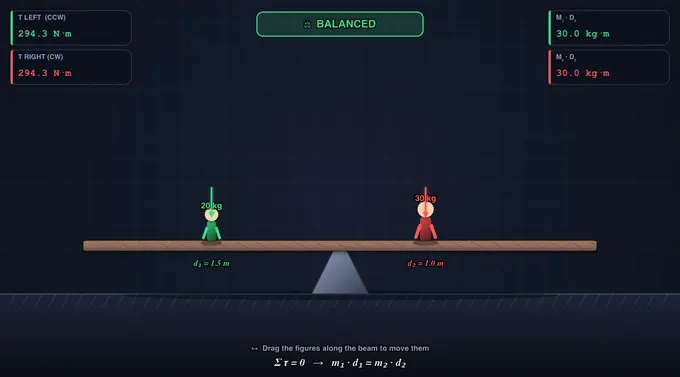
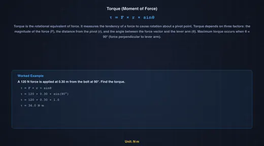
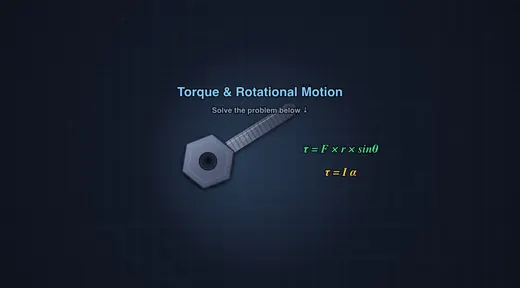

Torque & Rotational Motion Simulator
3D Model — Torque & Rotational Motion Simulator
Interactive torque and rotation simulator — apply forces to wrenches, balance seesaws, spin discs, and race shapes down inclines. Explore τ = F×r. Try free!
Wrench • Seesaw • Spinning Disc • Rolling Race — Simulate • Explore • Practice • Quiz
Σ Live equations — values substituted from current state
💡 Insights — what the numbers tell you
1 Overview
This free torque simulator lets you explore moment of force, lever arm mechanics, angular acceleration, and rotational equilibrium through four interactive scenarios. The tool calculates torque using τ = F × r × sinθ, demonstrates Newton’s second law for rotation (τ = Iα), and shows how shapes with different moments of inertia behave during rolling motion on inclined planes.
Designed for engineering students, mechanical engineering undergraduates, and technicians, this simulator covers wrench torque for bolt tightening, seesaw balance, spinning disc dynamics, and rolling race comparisons — all with real-time animated free body diagrams and precise numerical readouts.
2 Setting the Scene
The simulator opens in Simulate mode with the Wrench & Bolt scenario. The canvas shows a wrench applying force to a bolt with the torque vector visualised. Five readout cards display Applied Torque, Required Torque, Moment Arm, Angle Factor, and Status.
Use the Scenario pills to switch between Wrench & Bolt, Seesaw Balance, Spinning Disc, and Rolling Race. Each scenario has its own sliders and controls. The four mode pills (Simulate, Explore, Practice, Quiz) are at the top of the page.
3 Running the Demo
Wrench & Bolt: Adjust the applied force (10–500 N), lever arm length (0.05–0.60 m), and angle (0–90°). Select a bolt size (M8, M12, M16, M20) to set the required torque. The animation shows whether the applied torque is sufficient to tighten the bolt, with the status changing to “Tightened” when τapplied ≥ τrequired.
Seesaw Balance: Set masses and distances on both sides — or simply click and drag either figure directly on the canvas to slide it along the beam. The animation shows the seesaw tilt direction, and the readouts display the clockwise and counterclockwise moments. Balance is achieved when M1·d1 = M2·d2.
Spinning Disc: Apply torque to a disc of specified mass and radius. Choose the shape (Solid Disc, Ring, Solid Sphere) to set the moment of inertia formula. The animation shows the disc accelerating angularly, and readouts display τ, I, and α = τ/I.
Rolling Race: Set the incline angle and watch three shapes (solid cylinder, hollow cylinder, solid sphere) race down the ramp. The solid sphere wins because it has the lowest I/mr² ratio, leaving more energy for translational speed.
4 Behind the Physics
Explore mode offers concept cards across three categories: Torque Basics (definition, lever arm, angle effect, units), Rotational Dynamics (moment of inertia, Newton’s 2nd law for rotation, angular momentum, rolling motion), and Applications (bolt tightening, seesaw design, flywheel energy storage). Each card includes a formula, canvas diagram, and worked example.
Key equations covered: τ = Fr·sinθ, τ = Iα, I formulas for standard shapes, rolling acceleration a = g·sinθ/(1 + I/mr²), and rotational kinetic energy Erot = ½Iω².
5 Try a Problem
Practice mode generates unlimited random problems: calculate the torque needed to tighten a bolt, find the balancing distance for a seesaw, determine angular acceleration for a spinning disc, or compare rolling speeds of different shapes. Full step-by-step solutions are shown for incorrect answers.
Quiz mode presents 5 randomised questions per session covering all four scenarios. Questions mix conceptual items with numerical calculations about torque, moment of inertia, and rotational equilibrium. A detailed score breakdown is shown at the end.
6 Toolbar, Units & Shortcuts
The toolbar above the canvas lets you switch Units between SI (N, m, kg, N·m) and Imperial (lbf, ft, lb, ft·lbf). All input fields, readout cards, on-canvas badges, and the live equations panel update instantly. Internal calculations always stay in SI — only the display converts.
Undo / Redo: Use the Undo / Redo buttons or Ctrl + Z / Ctrl + Shift + Z to step back and forth through your slider and preset changes. The history stack remembers every state change.
Grid: The Grid checkbox toggles a subtle background grid on the canvas for precise visual reference.
Export: Click PNG to download the current canvas as an image, or CSV to download a row of all current numerical state and computed values for a spreadsheet or lab report.
Right-click on the canvas for a context menu with Export PNG, Export CSV, Toggle Grid, Show Calculations, and Reset.
Stepper inputs: Every slider has a companion numeric input on the right — type an exact value (e.g. 17.5 kg) and press Enter to apply.
7 Show Calculations & Live Equations
The blue Show Calculations button on the canvas opens a step-by-step modal showing exactly how the result was derived, in classical mathematical notation (rendered with KaTeX). Each step gives the formula, the substituted values in SI units, and the result — ideal for engineering homework or lab reports.
The Live Equations panel below the controls shows the active formula with your current values substituted, re-rendered as you adjust sliders. The Insights panel offers what-if commentary on the current state.
8 Click & Drag (Seesaw)
In the Seesaw scenario you can click and drag the people directly on the canvas to reposition them along the beam — the cursor changes to a hand grip when you hover over a person. Releasing snaps the mass into place and re-evaluates the balance. Sliders, presets, and dragging all stay in sync.
When you press Simulate, curved arrows appear above each head showing the rotational direction each weight produces about the pivot (CCW for left, CW for right), along with each side's numeric torque.
9 Tips & Best Practices
- Wrench scenario: Reduce the angle from 90° to see how torque drops — at 0° the force passes through the pivot and produces zero torque.
- Seesaw tip: Keep one side fixed and drag the other person until BALANCED appears — a practical demonstration of rotational equilibrium.
- Spinning Disc: Compare Solid Disc (I = ½mr²) with Ring (I = mr²) — the ring has twice the moment of inertia, so it accelerates half as fast for the same torque. The ghost cards show all three α values side-by-side.
- Rolling Race: All three shapes (sphere, solid cylinder, hollow cylinder) race simultaneously. Note that mass and radius cancel out — only the shape factor I/mr² determines rolling speed.
- Use the bolt presets (M8 through M20) to see how required torque scales with bolt size in real mechanical assemblies.
- The simulator works on tablets and mobile devices in landscape mode.
Understanding Torque & Rotational Motion — Free Interactive Simulator

Torque, also called moment of force, is the rotational analogue of linear force, calculated as τ = F × r × sinθ in newton·metres (N·m). It measures how effectively a force at distance r from a pivot causes rotation, with peak effect when applied perpendicular to the lever arm. This free torque calculator lets you tighten bolts with a real ring spanner, balance a seesaw by drag-and-drop, spin discs of any shape, and race a sphere, solid cylinder, and hollow cylinder down an incline — all with live N·m and ft·lbf readouts, step-by-step calculations, and animated free-body diagrams.
Quick Reference — Moment of Inertia (I/mr²)
| Shape | I formula | I/mr² | Rolling rank |
|---|---|---|---|
| Solid sphere | I = ⅖ mr² | 0.40 | 🥇 Fastest |
| Solid cylinder / disc | I = ½ mr² | 0.50 | 🥈 Second |
| Thin spherical shell | I = ⅔ mr² | 0.67 | 🥉 Third |
| Hollow cylinder (ring) | I = mr² | 1.00 | Slowest |
Torque: The Rotational Force
Torque is calculated as τ = F × r × sinθ, where F is the applied force, r is the lever arm (distance from pivot to force application), and θ is the angle between the force vector and the lever arm. Maximum torque occurs when force is applied perpendicular to the lever arm (θ = 90°). This principle is fundamental to wrench design — longer wrenches provide greater torque for the same applied force, which is why mechanics use breaker bars for stubborn bolts. The SI unit of torque is the Newton-metre (N·m).

Moment of Inertia & Angular Acceleration
Moment of inertia (I) describes an object’s resistance to angular acceleration, just as mass resists linear acceleration. Newton’s second law for rotation states τ = Iα, where α is angular acceleration in rad/s². The moment of inertia depends on both mass and how that mass is distributed from the rotation axis: a solid disc has I = ½mr², a ring has I = mr², and a solid sphere has I = ⅖mr². This is why figure skaters spin faster when they pull their arms in — reducing I while conserving angular momentum L = Iω.

Rolling Motion & Energy Conservation
When objects roll down an incline without slipping, gravitational potential energy converts to both translational kinetic energy (½mv²) and rotational kinetic energy (½Iω²). Objects with higher rotational inertia ratios (I/mr²) convert more energy into spinning and less into forward motion, making them roll slower. The acceleration down an incline is a = g·sinθ / (1 + I/mr²). A solid sphere (I/mr² = 0.4) always beats a solid cylinder (0.5), which beats a hollow cylinder (1.0). Mass and radius cancel out — only the shape matters!
How Hard to Pull on the Wrench — A Workshop Calculation
A typical M12 grade 8.8 bolt needs a tightening torque of 83 N·m (a value taken from the Shigley standard table). You have a 300 mm ring spanner. How hard do you pull?
τ = F × r ⇒ F = τ / r = 83 / 0.30 = 277 N (~28 kgf, pulled perpendicular)
Now swap to a stubby 150 mm spanner — halving the lever arm doubles the required force to 554 N, well into the “stand on the spanner” range. This is exactly why mechanics keep breaker bars (often 600 mm or longer) in the toolbox: F = τ/r is the entire reason. The trade-off is space — a long lever does not fit inside a wheel arch, so a short ratchet with extra force is sometimes the only option. Set the Bolt-Tightening preset in the simulator and watch the live N·m readout match the textbook target.
Watch the angle: if the same spanner is pulled at θ = 60° from perpendicular, the effective torque drops by sin60°:
τeff = F × r × sinθ = 277 × 0.30 × sin60° = 277 × 0.30 × 0.866 = 72 N·m
You think you tightened to 83 N·m; the bolt actually saw 72. On a critical joint this is the difference between “tight” and “loose enough to vibrate out.”
Balancing a Seesaw — Statics in One Equation
A 30 kg child sits 1.4 m from the pivot of a seesaw. Where must a 25 kg child sit on the other side to balance the board?
For static equilibrium, the sum of moments about the pivot is zero, so the moment on one side equals the moment on the other:
m1g · d1 = m2g · d2 ⇒ 30 × 1.4 = 25 × d2 ⇒ d2 = 1.68 m
The lighter child sits 0.28 m further from the pivot, exactly as intuition suggests. The same logic governs crane stability (counter-weight × its distance from the pivot must equal load × its reach), bookshelf anchoring (gravity moment from the tipping point), and forklift load charts (the rated capacity drops with reach because the back wheels would otherwise lift off). The seesaw preset in the simulator lets you drag either child and see the moment balance update in real time.
Rolling Without Slipping — The Race Down the Ramp
The shape table at the top of this article gives the order: solid sphere > solid disc > spherical shell > ring. The physics is one equation. For a body rolling without slipping down an incline of angle θ, energy conservation between top and bottom (height h, speed v at the bottom) gives:
mgh = ½mv² + ½Iω² and v = rω (no slip)
⇒ v² = 2gh / (1 + I/mr²)
The mass and radius drop out completely — only the dimensionless ratio I/mr² matters. A solid sphere (0.40) reaches the bottom with v² = 2gh/1.40, a ring (1.00) with v² = 2gh/2.00. Put numbers in for h = 1 m:
- Solid sphere: v = √(2×9.81/1.40) = 3.74 m/s
- Solid cylinder: v = √(2×9.81/1.50) = 3.62 m/s
- Hollow ring: v = √(2×9.81/2.00) = 3.13 m/s
Race them on the simulator’s incline. The sphere always wins — not because it is heavier or smaller, but because less of the gravitational PE ends up locked into rotational KE.
Common Pitfalls in Torque Problems
- Forgetting the perpendicular component. When the force is not at 90° to the lever arm, you must use F·sinθ, not the raw force. Worked above with the 60° spanner pull.
- Mixing up torque and work. Both have units of N·m, but a torque does not do work unless the object rotates. A static bolt held at 83 N·m has zero work done on it; rotating it through 1 rad does 83 J of work.
- Picking the wrong pivot in a statics problem. Choose the pivot that eliminates the most unknowns — usually one of the support reactions. Any pivot is mathematically valid; the smart pivot makes the algebra trivial.
- Confusing moment of inertia formulas. The factor for a thin ring is m·r²; for a solid disc it is ½m·r². They differ by a factor of two because the disc’s mass is distributed closer to the axis. Use the simulator’s Quick-Reference table whenever in doubt.
- Ignoring slip. The rolling-race result above assumes the bodies roll without slipping. On a real ramp covered in oil they would slide and the answer would change entirely — gravity does work only against linear kinetic energy, not rotational, and all four shapes would tie.
Selected References
- Hibbeler, R. C. — Engineering Mechanics: Statics & Dynamics, 14th ed., Pearson, Chapters 4 (Force System Resultants) and 17 (Planar Kinetics).
- Shigley & Mischke — Mechanical Engineering Design, 10th ed., Chapter 8 (Screws, Fasteners and Connections) — for standard tightening torque tables used in the wrench example above.
- ISO 898-1:2013 — Mechanical properties of fasteners made of carbon steel and alloy steel — Part 1: Bolts, screws and studs with specified property classes.
- BS EN ISO 6789-1:2017 — Assembly tools for screws and nuts — Hand torque tools — Part 1: Requirements.
Explore Related Simulators
If you found this torque simulator helpful, explore our Friction & Contact Forces simulator, Simple Machines simulator, Newton’s Laws of Motion simulator, and Flywheel Energy Storage calculator for more hands-on practice.